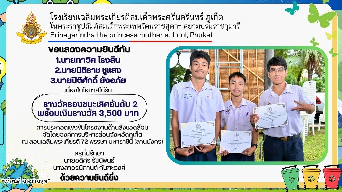
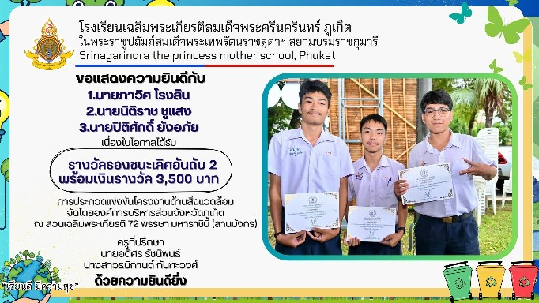

ได้รับรางวัลรองชนะเลิศ อันดับ 2 ในกิจกรรมแข่งขันโครงงานด้านส่ิงแวดล้อม ระดับมัธยมศึกษาตอน ปลาย เนื่องในวันสิ่งแวดล้อมโลก ประจําปี 2568
.jpg) 

ในการแข่งขันนี้ผมและทีมได้พัฒนาต้นแบบเว็ปแพลตฟอร์ม PHUKET FOOD HERO ขึ้นมา เนื่องจากปัญหาขยะล้นเมืองในจังหวัด ภูเก็ต ซึ่งมีขยะมากถึง 1,000 ตัน/วัน โดยเรามีเป้าหมายเพื่อช่วยให้ขยะอินทรีย์ที่ทาง โรงเรียน โรงแรม หรือสถานที่อื่นๆสร้างขึ้นมา ได้นำไปใช้ประโยชน์ โดยเกษตรกร โดยมีแพลตฟอร์มของเราเป็นตัวกลางให้ทั้งสองฝ่าย แพลตฟอร์มเรามีเป้าหมายที่จะลดปริมาณขยะฝั่งกลบและก๊าซเรือนกระจก
สิ่งที่ได้รับจาการแข่งขันนี้ คือ ประสบการณ์และทักษะการออกแบบและสร้างเว็บไซต์เป็นครั้งแรก โดยใช้ HTML,CSS,JAVASCRIPT และระบบหลังบ้านและฐานข้อมูลที่ใช้ google Firebase รวมถึงระบบยืนยันตัวตนและการจัดเก็บไฟล์ และ deploy เว็บไซต์ด้วย github
ได้รับรางวัลชนะเลิศระดับทองในการประกวดวิธีปฏิบัติที่เป็นเลิศ (Best Practice) ด้านนวัตกรรมสิ่งประดิษฐ์ ระดับมัฐยม ศึกษาตอนปลาย โครงการขับเคลื่อนการสร้างองค์ความรู์ทางทะเลและมหาสมุทรและผลประโยชน์ของชาติทางทะเลไปสู่การ เรียนการสอนในสถานศึกษา
.png)
ผมและทีมได้คิดไอเดียโครงงาน ทุ่นอัจฉริยะเฝ้าระวังและช่วยชีวิตผู้ประสบภัยทางนํ้าอัตโนมัติ ขึ้น เพื่อเพิ่มความปลอดภัยทางนํ้า โดยจะใช้โมเดล AI ที่เคยพัฒนามาก่อนหน้านี้ มาพัฒนาต่อยอดด้วยการ ฝึกสอนเพิ่มเติม กับชุดข้อมูลใหม่ จนทําให้สามารถจําแนพฤติกรรมของคนจมนํ้าได้อย่างแม่นยํายิ่งขึ้น โดยทุ่นนี้จะถูกออกแบบมาให้มีหน้าที่เป็นแนวเขตแจ้งเตือนไม่ให้นักท่องเที่ยวออกนอกบริเวณเล่นนํ้าที่ปลอดภัย และส่งสัญญาณเตือนพร้อมข้อมูลพิกัดไปยังไลฟ์การ์ดในทันที เพื่อให้สามารถเข้าช่วยเหลือได้อย่าง รวดเร็ว หากพบเจอคนจมนํ้า